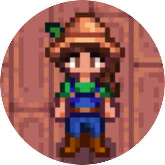

|  | InitumCitizen of Stardew Valley Passionate Farmer who grows (with love!) and sells organic stuff such as: Ancient Fruits, Pineapples and Wines. Once you decide to visit and buy some groceries... you can also get to know all her adorable 4-feet friends and say hello while taking break in Farm's Cafe |
| 2019 | Swiat Krowkow Farm and was founded. | 2020 | The firm started operating on 40 hectares |
| 2021 | Farm doubled in size once Farmer Matt found an Exotic Island. |
| 2022 | Jungle Cafe Opening |
|
|